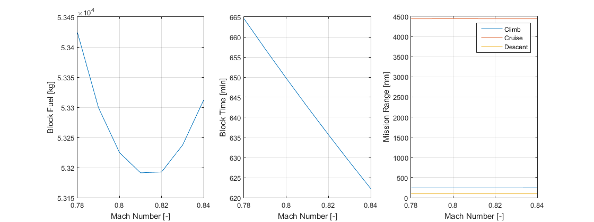
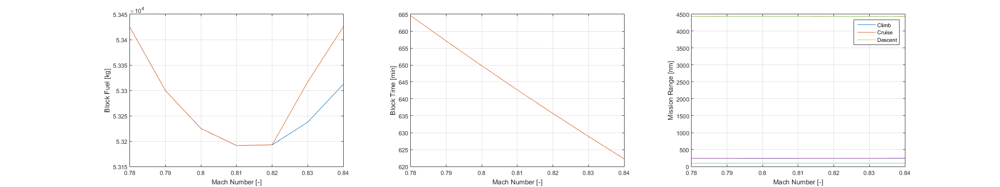

Run Design Set
This file (RunDesignSet) illustrates how to calculate mission parameters (mass, fuel and range) for a set of design missions defined by a target payload, target range and aircraft parameters. The climb performance parameters are also calculated.
The main file for running the Design Case is FindDesignPoint For brief description type: help FindDesignPoint
Created by: D Rezgui, S Mitchell and M Gibbons Copyright: University of Bristol
Contents
Initialise aircraft parameters
delete Par; clear Par
clear; clc disp(' ') disp(' ******** Aircraft Performance Tool ********'); disp(' ******** Run Design Mission Case ********') disp([' ', datestr(clock)]); disp(' ') % Read Aircraft data from a re-defined file, e.g. 'AC_B777_AJenk'or 'AC_150C_twin' ParFunc = 'AC_B777_AJenk'; % or ParFunc = 'AC_150C_twin'; Par = eval(ParFunc); % Set parameters in the "Par" object, % Default values are set in the ParFunc disp(['... Aircraft parameters are set, based on ', ParFunc, ' data file']) disp(' ') % Reset parameters from default values (other parameters can be changed in % the Par object) Par.PL_req = 29050; % Required payload mass [kg] Par.Range_req = 4779; % Required design range [nm] % You can also reset the following parameters. (you can also change these parameters in the ParFunc file) % Par.S = 376.4; % Wing area [m^2] % Par.PLmax = 45000; % Max payload [kg] % Par.MFC = 80000; % Max Fuel capacity [kg] % Par.MTOM = 230000; % Max Take Off Mass [kg] % Par.Airframe = 130000; % Operating Mass Empty [kg] % Par.Alt_Cruise = 35000; % Cruise Alt [ft] % Par.DragRise = 0; % Flag to switch drag rise in the drag polar: 1 = Yes, 0 = No % Reset engine data parameters (if needed) Par.interp_method = 'linear'; % or 'spline' - 'spline' is slower but allows to extrapolate data Par.M_ext = []; % Extend Mach number range to M_ext - change to something like 0.1 if needed
******** Aircraft Performance Tool ********
******** Run Design Mission Case ********
20-Feb-2017 13:45:06
... Aircraft parameters are set, based on AC_B777_AJenk data file
Calculate the mass, fuel and range for a set of missions
Find mission properties for a set of Mach numbers
% Define a set of cruise numbers par_set = 0.78:0.01:0.84; % Define an appropriate parameter range xlab = 'Mach Number [-]'; % Define a label for the parameter used for the parameter set % Find results for the first design point (i=1) i = 1; disp(['Start calculations for design point number: ' num2str(i) ' value: ' num2str(par_set(i))]); % Set target design range. All other parameters are unchanged Par.Mach_Cruise = par_set(i); % Required design range [nm]. % call function FindDesignPoint to calculate mission properties dp1(i) = FindDesignPoint(Par); % Start loop for the rest of the design points if length(par_set)>1 for i=2:length(par_set) disp(['Start calculations for design point number: ' num2str(i) ' value: ' num2str(par_set(i))]); % Set target design range. All other parameters are unchanged Par.Mach_Cruise = par_set(i); % Required design range [nm]. % call function FindDesignPoint to calculate mission properties dp1(i) = FindDesignPoint(Par, dp1(1).EngineData, dp1(1).TOM_design); end else disp(' '); warning(' ... There is only one design point in this parameter set'); disp(' '); end
Start calculations for design point number: 1 value: 0.78 ... Engine data prepared from UBB65Data ... Calculating the value of aircraft Take-Off Mass (TOM) for the required design case Payload required : 29050 kg Range required : 4779 nm Cruise altitude : 35000 ft Cruise Mach No. : 0.78 ............................... Done Elapsed time is 12.880148 seconds. Calculate fuel burn for the required design case .... Done Elapsed time is 0.463897 seconds. TOM for required the mission : 220279 kg Block time for the mission : 665 minutes Block fuel for the mission : 53424 kg Reserve fuel for the mission : 8603 kg Total fuel for the mission : 61874 kg Start calculations for design point number: 2 value: 0.79 ... Calculating the value of aircraft Take-Off Mass (TOM) for the required design case Payload required : 29050 kg Range required : 4779 nm Cruise altitude : 35000 ft Cruise Mach No. : 0.79 ................... Done Elapsed time is 5.828644 seconds. Calculate fuel burn for the required design case .... Done Elapsed time is 0.427956 seconds. TOM for required the mission : 220198 kg Block time for the mission : 657 minutes Block fuel for the mission : 53299 kg Reserve fuel for the mission : 8647 kg Total fuel for the mission : 61794 kg Start calculations for design point number: 3 value: 0.8 ... Calculating the value of aircraft Take-Off Mass (TOM) for the required design case Payload required : 29050 kg Range required : 4779 nm Cruise altitude : 35000 ft Cruise Mach No. : 0.8 ................... Done Elapsed time is 7.600829 seconds. Calculate fuel burn for the required design case .... Done Elapsed time is 0.480079 seconds. TOM for required the mission : 220169 kg Block time for the mission : 650 minutes Block fuel for the mission : 53225 kg Reserve fuel for the mission : 8693 kg Total fuel for the mission : 61765 kg Start calculations for design point number: 4 value: 0.81 ... Calculating the value of aircraft Take-Off Mass (TOM) for the required design case Payload required : 29050 kg Range required : 4779 nm Cruise altitude : 35000 ft Cruise Mach No. : 0.81 ................... Done Elapsed time is 7.075209 seconds. Calculate fuel burn for the required design case .... Done Elapsed time is 0.322760 seconds. TOM for required the mission : 220183 kg Block time for the mission : 643 minutes Block fuel for the mission : 53191 kg Reserve fuel for the mission : 8741 kg Total fuel for the mission : 61779 kg Start calculations for design point number: 5 value: 0.82 ... Calculating the value of aircraft Take-Off Mass (TOM) for the required design case Payload required : 29050 kg Range required : 4779 nm Cruise altitude : 35000 ft Cruise Mach No. : 0.82 ................. Done Elapsed time is 4.812124 seconds. Calculate fuel burn for the required design case .... Done Elapsed time is 0.351904 seconds. TOM for required the mission : 220234 kg Block time for the mission : 636 minutes Block fuel for the mission : 53193 kg Reserve fuel for the mission : 8790 kg Total fuel for the mission : 61830 kg Start calculations for design point number: 6 value: 0.83 ... Calculating the value of aircraft Take-Off Mass (TOM) for the required design case Payload required : 29050 kg Range required : 4779 nm Cruise altitude : 35000 ft Cruise Mach No. : 0.83 ................. Done Elapsed time is 4.734821 seconds. Calculate fuel burn for the required design case .... Done Elapsed time is 0.311316 seconds. TOM for required the mission : 220330 kg Block time for the mission : 629 minutes Block fuel for the mission : 53237 kg Reserve fuel for the mission : 8841 kg Total fuel for the mission : 61926 kg Start calculations for design point number: 7 value: 0.84 ... Calculating the value of aircraft Take-Off Mass (TOM) for the required design case Payload required : 29050 kg Range required : 4779 nm Cruise altitude : 35000 ft Cruise Mach No. : 0.84 ..................... Done Elapsed time is 5.975207 seconds. Calculate fuel burn for the required design case .... Done Elapsed time is 0.311614 seconds. TOM for required the mission : 220459 kg Block time for the mission : 622 minutes Block fuel for the mission : 53312 kg Reserve fuel for the mission : 8895 kg Total fuel for the mission : 62054 kg
Plot Mission Profile
Call plotter Design Set
PlotDSet(dp1,par_set,xlab) drawnow
Repeat Design Set calculations but with drag rise corrections
Calculate the mass, fuel and range for a set of missions Find mission properties for a set of Mack numbers
Par.DragRise = 1; % Flag to switch drag rise in the drag polar: 1 = Yes, 0 = No % Find results for the first design point (i=1) i = 1; disp(['Start calculations for design point number: ' num2str(i) ' value: ' num2str(par_set(i))]); % Set target design range. All other parameters are unchanged Par.Mach_Cruise = par_set(i); % Required design range [nm]. % call function FindDesignPoint to calculate mission properties dp2(i) = FindDesignPoint(Par); % Start loop for the rest of the design points if length(par_set)>1 for i=2:length(par_set) disp(['Start calculations for design point number: ' num2str(i) ' value: ' num2str(par_set(i))]); % Set target design range. All other parameters are unchanged Par.Mach_Cruise = par_set(i); % Required design range [nm]. % call function FindDesignPoint to calculate mission properties dp2(i) = FindDesignPoint(Par, dp2(1).EngineData, dp2(1).TOM_design); end else disp(' '); warning(' ... There is only one design point in this parameter set'); disp(' '); end
Start calculations for design point number: 1 value: 0.78 ... Engine data prepared from UBB65Data ... Calculating the value of aircraft Take-Off Mass (TOM) for the required design case Payload required : 29050 kg Range required : 4779 nm Cruise altitude : 35000 ft Cruise Mach No. : 0.78 ............................... Done Elapsed time is 26.512157 seconds. Calculate fuel burn for the required design case .... Done Elapsed time is 0.864420 seconds. TOM for required the mission : 220279 kg Block time for the mission : 665 minutes Block fuel for the mission : 53424 kg Reserve fuel for the mission : 8603 kg Total fuel for the mission : 61874 kg Start calculations for design point number: 2 value: 0.79 ... Calculating the value of aircraft Take-Off Mass (TOM) for the required design case Payload required : 29050 kg Range required : 4779 nm Cruise altitude : 35000 ft Cruise Mach No. : 0.79 ................... Done Elapsed time is 14.551483 seconds. Calculate fuel burn for the required design case .... Done Elapsed time is 0.875167 seconds. TOM for required the mission : 220198 kg Block time for the mission : 657 minutes Block fuel for the mission : 53300 kg Reserve fuel for the mission : 8647 kg Total fuel for the mission : 61794 kg Start calculations for design point number: 3 value: 0.8 ... Calculating the value of aircraft Take-Off Mass (TOM) for the required design case Payload required : 29050 kg Range required : 4779 nm Cruise altitude : 35000 ft Cruise Mach No. : 0.8 ................... Done Elapsed time is 14.686534 seconds. Calculate fuel burn for the required design case .... Done Elapsed time is 0.896038 seconds. TOM for required the mission : 220169 kg Block time for the mission : 650 minutes Block fuel for the mission : 53225 kg Reserve fuel for the mission : 8693 kg Total fuel for the mission : 61765 kg Start calculations for design point number: 4 value: 0.81 ... Calculating the value of aircraft Take-Off Mass (TOM) for the required design case Payload required : 29050 kg Range required : 4779 nm Cruise altitude : 35000 ft Cruise Mach No. : 0.81 ................... Done Elapsed time is 21.787933 seconds. Calculate fuel burn for the required design case .... Done Elapsed time is 1.642980 seconds. TOM for required the mission : 220183 kg Block time for the mission : 643 minutes Block fuel for the mission : 53191 kg Reserve fuel for the mission : 8741 kg Total fuel for the mission : 61779 kg Start calculations for design point number: 5 value: 0.82 ... Calculating the value of aircraft Take-Off Mass (TOM) for the required design case Payload required : 29050 kg Range required : 4779 nm Cruise altitude : 35000 ft Cruise Mach No. : 0.82 ................. Done Elapsed time is 22.789081 seconds. Calculate fuel burn for the required design case .... Done Elapsed time is 1.645274 seconds. TOM for required the mission : 220234 kg Block time for the mission : 636 minutes Block fuel for the mission : 53193 kg Reserve fuel for the mission : 8790 kg Total fuel for the mission : 61830 kg Start calculations for design point number: 6 value: 0.83 ... Calculating the value of aircraft Take-Off Mass (TOM) for the required design case Payload required : 29050 kg Range required : 4779 nm Cruise altitude : 35000 ft Cruise Mach No. : 0.83 ................... Done Elapsed time is 17.343578 seconds. Calculate fuel burn for the required design case .... Done Elapsed time is 0.930893 seconds. TOM for required the mission : 220410 kg Block time for the mission : 629 minutes Block fuel for the mission : 53317 kg Reserve fuel for the mission : 8841 kg Total fuel for the mission : 62005 kg Start calculations for design point number: 7 value: 0.84 ... Calculating the value of aircraft Take-Off Mass (TOM) for the required design case Payload required : 29050 kg Range required : 4779 nm Cruise altitude : 35000 ft Cruise Mach No. : 0.84 ..................... Done Elapsed time is 25.569778 seconds. Calculate fuel burn for the required design case .... Done Elapsed time is 1.567328 seconds. TOM for required the mission : 220572 kg Block time for the mission : 622 minutes Block fuel for the mission : 53425 kg Reserve fuel for the mission : 8895 kg Total fuel for the mission : 62168 kg
Plot Mission Profile
Call plotter Design Set
PlotDSet(dp2,par_set,xlab)
Save results
savefile = 'DSet1.mat'; save(savefile, 'dp1', 'dp2', 'par_set','xlab');
Load saved data to workspace
delete Par; clear % clear workspace load 'DSet1.mat'; whos % show available variables in the workspace
Warning: File 'Par' not found. Name Size Bytes Class Attributes dp1 1x7 425942 designpoint dp2 1x7 425942 designpoint par_set 1x7 56 double xlab 1x15 30 char